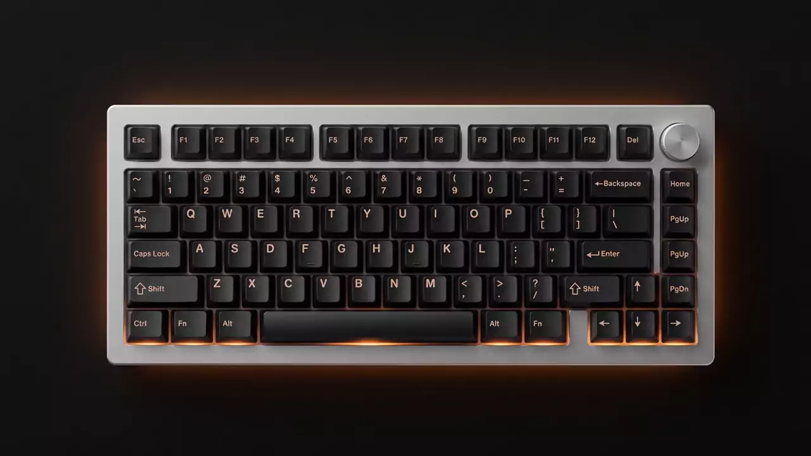

Wireless QMK · Bluetooth e 2.4 GHz
O teclado que se adapta ao seu jeito de digitar
Full-size com knob, hot-swap e wireless de 1000 Hz. Cada tecla e macro configurada por você, direto no navegador.
Role para conhecer cada detalhe
Conexão
1000 Hz sem fio
No modo 2.4 GHz, cada acionamento chega ao computador mil vezes por segundo, a mesma resposta de um teclado com fio. Bluetooth 5.1 segura até três dispositivos e o USB-C assume quando você quiser cabo.
Hot-swap
Troque os switches sem solda
Os sockets aceitam qualquer switch MX de 3 ou 5 pinos. Os Gateron Jupiter saem de fábrica lubrificados, nas versões Red, Brown e Banana.
Construção
Montagem gasket, som de custom
A placa de policarbonato fica suspensa em gaskets flexíveis, com camadas de espuma IXPE, PET e látex por dentro. As keycaps PBT double-shot têm legendas moldadas que não apagam com o uso.
Knob
Um giro para o que você mais usa
O knob de metal chega controlando volume. No Keychron Launcher ele vira zoom, avanço de timeline, brilho ou qualquer outra função, em dois minutos.
QMK e VIA
Seu layout, suas regras
O firmware é QMK, código aberto usado pela comunidade custom. Você abre o Keychron Launcher no navegador, remapeia teclas, cria macros e camadas, e tudo fica gravado na memória do teclado.
Bateria
Até 300 horas longe da tomada
São 4000 mAh: semanas de trabalho com o backlight desligado, cerca de 100 horas com a iluminação RGB moderada. O USB-C recarrega enquanto você digita.
Disponível na Amazon
Digite melhor a partir de hoje
Versões Red, Brown e Banana, layout ANSI na cor Carbon Black, com knob incluso.
Especificações
Ficha técnica da versão Fully Assembled Knob, layout ANSI, em três blocos.
Conexão
- Modos
- 2.4 GHz, Bluetooth 5.1 e USB-C
- Taxa de resposta
- Até 1000 Hz (2.4 GHz e cabo)
- Pareamento
- 3 dispositivos no Bluetooth
- Bateria
- 4000 mAh, até 300 h sem backlight
Construção
- Layout
- Full-size 100%, 108 teclas, knob
- Montagem
- Gasket com placa de policarbonato
- Acústica
- Espumas IXPE, PET e látex
- Keycaps
- PBT double-shot, perfil OSA
No dia a dia
- Firmware
- QMK, config via Keychron Launcher
- Hot-swap
- Switches MX de 3 e 5 pinos
- Iluminação
- RGB south-facing configurável
- Sistemas
- macOS, Windows e Linux
Valores de autonomia variam conforme o uso. Preço e disponibilidade na página do produto.
Qual Gateron Jupiter combina com você
Os três switches disponíveis mudam o toque do teclado, e a escolha depende do que você faz com ele o dia inteiro.
| Red | Brown | Banana | |
|---|---|---|---|
| Tipo | Linear | Tátil | Tátil pesado |
| Sensação | Curso liso, sem degrau | Degrau leve no acionamento | Degrau firme e mais resistente |
| Som | Mais baixo | Médio | Médio, mais encorpado |
| Indicado para | Jogos e digitação leve | Uso misto, o mais versátil | Quem digita forte e quer feedback claro |
Existe também a versão barebone, sem switches e keycaps, para quem quer montar do zero. As três variantes estão na página do produto na Amazon.
Envio internacional
A Amazon entrega no Brasil com prazo e custo calculados no checkout.
Devolução
Política de devolução da Amazon, nos prazos e condições da loja.
Garantia Keychron
Suporte oficial do fabricante para defeitos de fábrica.